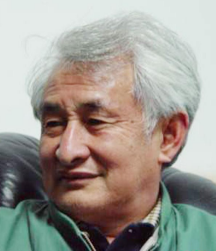

返回主页
季克良

季克良，男，汉族，1939 年江苏人，中共党员，本科学历（发酵专业），工程技术应用研究员、高级工程师、国家白酒评酒委员。
1964 年于无锡轻工业学院毕业分配到贵州茅台酒厂工作， 曾任生产科副科长、副厂长、厂长、总工程师等职务； 1996 年 12 月至 1998 年 5 月，任中国贵州茅台酒厂（集团）有限责任公司董事长、总经理、总工程师；
1997年1月至1998年5月任中国贵州茅台酒厂 （集团）有限责任公司董事长兼党委副书记、总经理、总工程师（正厅级）；
1998年5月至1999年11月任中国贵州茅台酒厂 （集团） 有限责任公司党委书记、董事长、总工程师；
1999年11月至2000年8月任中国贵州茅台酒厂有限责任公司党委书记、董事长、总工程师，贵州茅台酒股份有限公司董事长；
2000年9月至2004年8月任中国贵州茅台酒厂有限责任公司党委书记、董事长、总工程师，贵州茅台酒股份有限公司董事；
现任中国贵州茅台酒厂有限责任公司董事长、党委副书记、总工程师，兼任贵州茅台酒股份有限公司董事。
version:1.0; jobnet@188.com © retter2012.com